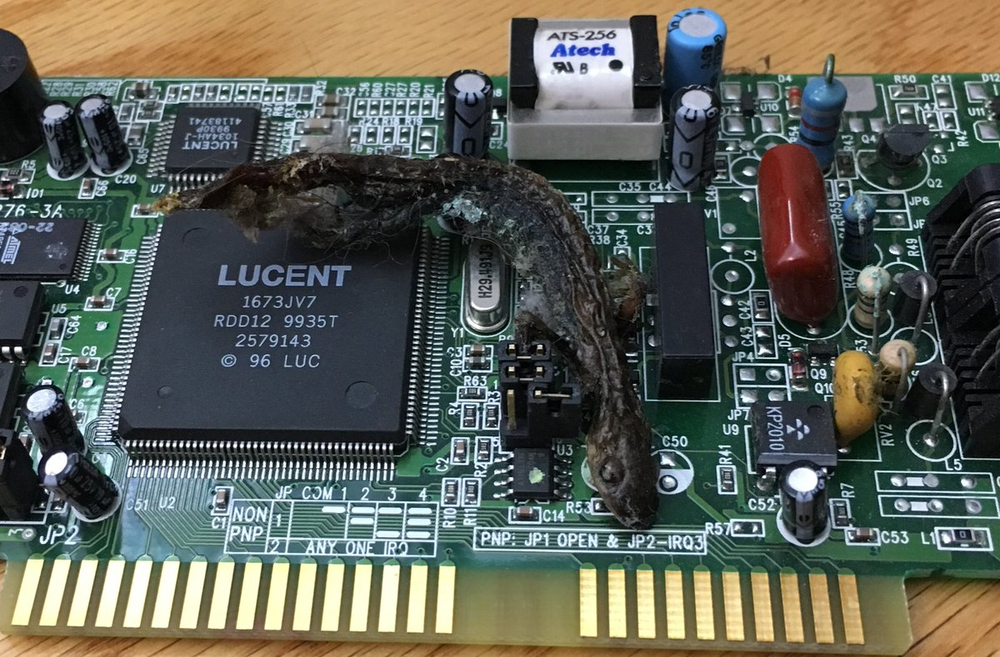

  	<div class="flex-wrap">
      
  	  <article class="tweet  " id="main">
  	    <p class="full_text">
  	      In another timeline maybe we’d all be saying “Oh no, I think there’s a lizard in my program.” <div class="gallery"><ul><li><a href="../../tweets_media/1046810961909178368-DocFBJJUUAEn3Wt.jpg"></a></li></ul></div>
  	    </p>
  	    <p class="created_at">
  	      10/1/2018, 10:15:56 AM
  	    </p>
  	    <p class="favorite_count">Favs: 5</p>
  	    <p class="retweet_count">Retweets: 1</p>
  	    <a class="permalink" href="../1046810961909178368">link</a>
  	  </article>

  	</div>
  </div>
